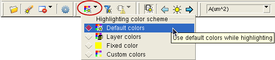
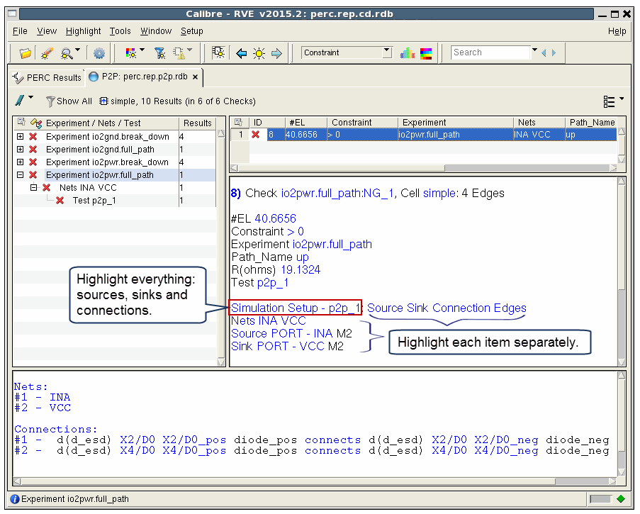
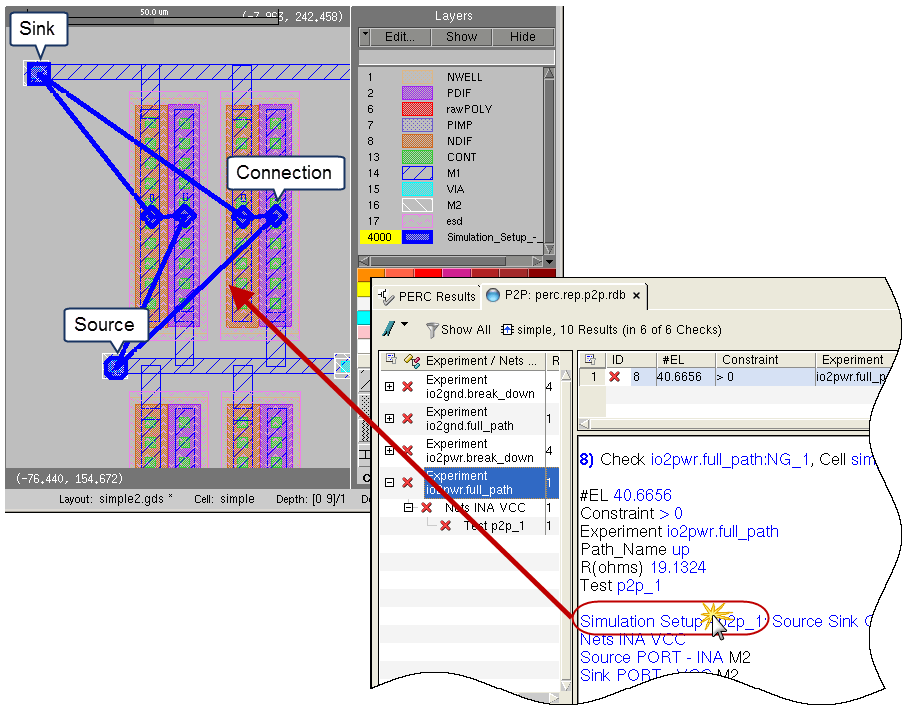

Calibre RVE for
PERC displays links for the sources, sinks, and connections of Calibre
PERC LDL P2P results. The links make it easy to highlight and debug the
P2P results. The links are part of enhanced simulation results.
(Optional)
A Check Text Override (CTO) file with DRC RVE rule check comments
to specify layer visibility and other settings. See “DRC RVE Check Text Override File (CTO File)” in the Calibre
RVE User’s Manual. Highlight color cannot be specified in
a CTO file with Calibre RVE for PERC—it is specified with the toolbar
button Setup Highlight color scheme.
The check name for use in
the CTO file is <experiment>:<net>, where there is one check
for each net in the results output for the experiment. You can use
wildcards in the check name in the CTO file; for example: exppwr_p2p*.
To determine the check name for a result, you can view the first
line of the result listing in the Result Data Pane of Calibre RVE.
Video
Procedure
Open your layout in your layout
viewer.
Start RVE in Calibre PERC
mode and open the DFM database from the Calibre PERC LDL CD run.
See “Opening LDL P2P Results in Calibre RVE” for complete instructions.
In Calibre RVE, click the
P2P results tab.
Enable View > Result Options > Result Data Pane.
If not already done, sort
the tree view by Experiment / Nets / Test. Select View > Tree Options > Group By > Custom, then
select the grouping hierarchy, ending the selection by clicking
last leaf in the hierarchy at the top of the menu listing.
Set Calibre RVE to cycle highlight
colors. In the toolbar, click the Setup Highlight color
scheme button and choose “Default colors.”

Select an experiment with
full path results in the tree view, then select a result in the
result view (right panel). The view should be similar to that shown
in the following figure:
Figure 1. LDL P2P Results in
Calibre RVE for PERC

Do the following in Calibre
RVE:
Enable Highlight > Zoom to Highlights.
Disable Highlight > Clear Existing Highlights.
(Optional)
Choose View > Schematics > Layout if you
want to see highlights in the extracted layout netlist.
Click “Simulation Setup” in
the Result Data Pane of the Calibre RVE display to highlight all
elements in the result.

The sources, sinks, and connections
are highlighted with the following marker shapes:
You can change the marker size. Select Setup > Options,
select the Highlighting category, expand the
LVS/PERC/PEX Highlighting area, and adjust the setting for “Marker
Scale for P2P/CD/LDL results.”
In Calibre RVE, enable Highlight > No View Change.
Click the different elements
that make up the result to highlight them separately and debug the
results. For example, the following figure shows separate highlights
for net INA, and port INA, and the two different connections.